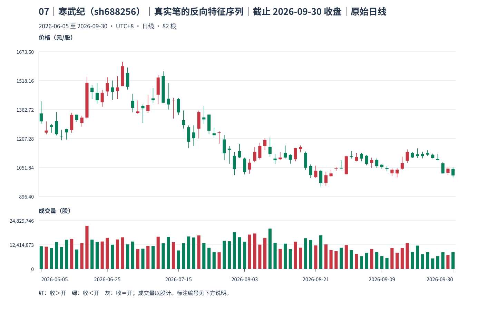
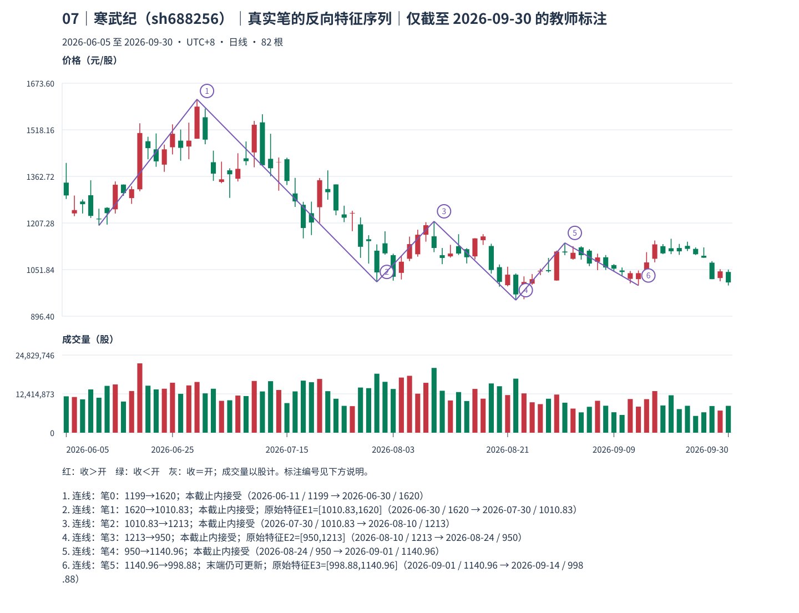
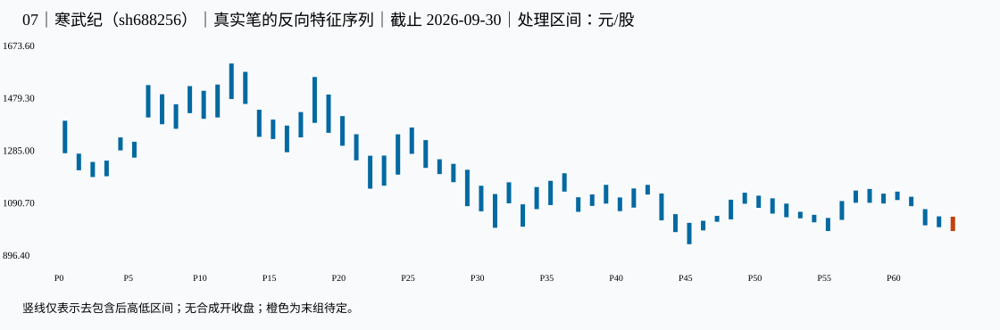

07｜寒武纪（sh688256）｜真实笔的反向特征序列｜本包讲解
教师讲解仅截止 2026-09-30；先保留同编号原答，逐小段核对、确认理解后再继续。
真实未复权日线；价格单位元/股（CNY/share），成交量单位股（shares），横轴按实际交易日顺序。窗口避开已知价格基准变化，其他公司行为及现金分红日历仍未穷尽核准；价格差不单独证明技术破位、经济损失或投资总回报。样本按教学需要事后选取，不用于估计模式频率。
声明起点 2026-06-05，首对 raw 0=[1287.340,1407.770]、raw 1（2026-06-08）=[1230.080,1298.880]，互不包含，高低共同向下。只按本窗口启动，未补造更早热身资料，也未绑定此前已确认段；左边界限制仍保留，首个笔端点不能自动作为真实段起点。
这一例实际算出了什么
仅作假设：从笔 0 开始、方向 up。抽取相反方向的笔作为原始特征：E1=笔 1[1010.83,1620]（2026-06-30→2026-07-30，accepted_at_cutoff）；E2=笔 3[950,1213]（2026-08-10→2026-08-24，accepted_at_cutoff）；E3=笔 5[998.88,1140.96]（2026-09-01→2026-09-14，latest_endpoint_revisable）。
前两元素 max(低)=1010.83，min(高)=1213，首两特征缺口=False；相邻包含分别为 [False, True]。前三原始元素关系=no_raw_fractal，需另作特征包含=True；原始关系不能冒称标准化特征分型。
三条输入笔的 known_at 依次为 笔 1=2026-08-03（accepted_at_cutoff）；笔 3=2026-08-27（accepted_at_cutoff）；笔 5=2026-09-16（latest_endpoint_revisable）。候选起始三笔正宽重叠=True；以上只是本截止内输入与算术，最末端仍可能更新。
本窗口左边界没有已确认前段的绑定，特征序列也没有独立完成标准化；若有特征缺口，还须候选界之后的反向标准特征分型。故本例不输出完成线段；不能凭原始元素看起来转向就补造 B0。
known_at 是本窗口、给定口径下边界证据齐备之日，空值表示尚待；confirmed_at_cutoff＝本截止内分型满足；provisional_right_group＝右组尚可吸收；provisional_fractal＝笔端点仍待；latest_endpoint_revisable＝末端仍可修订；accepted_at_cutoff＝本次接受。所有状态均非永久确认。
对照原图、标注和处理区间



展开本截止的逐根映射、分型、笔、拒绝与修订证据
1 原始 K 线 → 处理区间
| 原始号 | 日期 | 开 | 高 | 低 | 收 | 映射到 |
|---|---|---|---|---|---|---|
| 0 | 2026-06-05 | 1342.000 | 1407.770 | 1287.340 | 1299.200 | P0 |
| 1 | 2026-06-08 | 1239.300 | 1298.880 | 1230.080 | 1250.360 | P1 |
| 2 | 2026-06-09 | 1279.000 | 1285.800 | 1239.020 | 1270.010 | P1 |
| 3 | 2026-06-10 | 1300.000 | 1349.900 | 1224.170 | 1231.000 | P1 |
| 4 | 2026-06-11 | 1221.960 | 1255.000 | 1199.000 | 1219.500 | P2 |
| 5 | 2026-06-12 | 1258.000 | 1260.000 | 1202.000 | 1240.000 | P3 |
| 6 | 2026-06-15 | 1253.000 | 1345.990 | 1238.880 | 1335.000 | P4 |
| 7 | 2026-06-16 | 1335.500 | 1335.910 | 1297.790 | 1306.990 | P4 |
| 8 | 2026-06-17 | 1290.400 | 1329.870 | 1271.100 | 1320.000 | P5 |
| 9 | 2026-06-18 | 1319.720 | 1540.000 | 1313.200 | 1507.460 | P6 |
| 10 | 2026-06-22 | 1480.000 | 1494.940 | 1420.000 | 1456.990 | P6 |
| 11 | 2026-06-23 | 1453.000 | 1506.000 | 1394.840 | 1413.000 | P7 |
| 12 | 2026-06-24 | 1402.000 | 1468.880 | 1378.000 | 1453.000 | P8 |
| 13 | 2026-06-25 | 1460.000 | 1536.250 | 1436.000 | 1505.000 | P9 |
| 14 | 2026-06-26 | 1482.000 | 1518.980 | 1415.000 | 1458.000 | P10 |
| 15 | 2026-06-29 | 1462.330 | 1541.940 | 1420.000 | 1482.000 | P11 |
| 16 | 2026-06-30 | 1488.410 | 1620.000 | 1488.370 | 1595.550 | P12 |
| 17 | 2026-07-01 | 1560.000 | 1588.970 | 1470.010 | 1485.330 | P13 |
| 18 | 2026-07-02 | 1410.000 | 1448.660 | 1348.000 | 1372.000 | P14 |
| 19 | 2026-07-03 | 1344.140 | 1412.000 | 1340.000 | 1353.000 | P15 |
| 20 | 2026-07-06 | 1383.000 | 1389.860 | 1291.000 | 1369.750 | P16 |
| 21 | 2026-07-07 | 1355.000 | 1439.980 | 1346.060 | 1388.000 | P17 |
| 22 | 2026-07-08 | 1423.000 | 1479.310 | 1400.010 | 1413.550 | P18 |
| 23 | 2026-07-09 | 1442.700 | 1548.000 | 1393.000 | 1535.010 | P18 |
| 24 | 2026-07-10 | 1542.980 | 1569.970 | 1400.000 | 1400.000 | P18 |
| 25 | 2026-07-13 | 1421.400 | 1504.960 | 1363.000 | 1390.000 | P19 |
| 26 | 2026-07-14 | 1410.000 | 1425.980 | 1315.000 | 1411.000 | P20 |
| 27 | 2026-07-15 | 1420.000 | 1425.000 | 1334.000 | 1347.460 | P20 |
| 28 | 2026-07-16 | 1305.900 | 1357.770 | 1261.000 | 1279.220 | P21 |
| 29 | 2026-07-17 | 1268.000 | 1278.000 | 1156.000 | 1190.580 | P22 |
| 30 | 2026-07-20 | 1240.000 | 1278.530 | 1167.000 | 1209.000 | P23 |
| 31 | 2026-07-21 | 1260.000 | 1357.460 | 1208.000 | 1350.020 | P24 |
| 32 | 2026-07-22 | 1320.660 | 1382.800 | 1285.000 | 1310.000 | P25 |
| 33 | 2026-07-23 | 1336.000 | 1336.000 | 1233.000 | 1249.000 | P26 |
| 34 | 2026-07-24 | 1235.980 | 1265.000 | 1210.000 | 1225.000 | P27 |
| 35 | 2026-07-27 | 1239.000 | 1248.000 | 1180.000 | 1241.020 | P28 |
| 36 | 2026-07-28 | 1202.610 | 1226.000 | 1091.000 | 1128.000 | P29 |
| 37 | 2026-07-29 | 1153.000 | 1166.660 | 1071.910 | 1146.900 | P30 |
| 38 | 2026-07-30 | 1115.000 | 1136.000 | 1010.830 | 1042.430 | P31 |
| 39 | 2026-07-31 | 1139.500 | 1179.500 | 1101.580 | 1106.000 | P32 |
| 40 | 2026-08-03 | 1100.000 | 1105.000 | 1015.000 | 1028.000 | P33 |
| 41 | 2026-08-04 | 1041.000 | 1097.870 | 1019.000 | 1078.210 | P33 |
| 42 | 2026-08-05 | 1088.000 | 1161.940 | 1080.010 | 1136.900 | P34 |
| 43 | 2026-08-06 | 1103.000 | 1185.000 | 1095.000 | 1168.150 | P35 |
| 44 | 2026-08-07 | 1168.150 | 1210.000 | 1145.020 | 1199.930 | P36 |
| 45 | 2026-08-10 | 1163.000 | 1213.000 | 1110.010 | 1124.000 | P36 |
| 46 | 2026-08-11 | 1100.000 | 1123.990 | 1070.000 | 1090.640 | P37 |
| 47 | 2026-08-12 | 1095.980 | 1134.550 | 1092.000 | 1105.380 | P38 |
| 48 | 2026-08-13 | 1130.000 | 1170.000 | 1100.550 | 1105.500 | P39 |
| 49 | 2026-08-14 | 1119.990 | 1123.300 | 1072.500 | 1093.000 | P40 |
| 50 | 2026-08-17 | 1096.000 | 1156.680 | 1085.700 | 1156.000 | P41 |
| 51 | 2026-08-18 | 1150.000 | 1170.000 | 1134.120 | 1162.500 | P42 |
| 52 | 2026-08-19 | 1130.560 | 1138.000 | 1038.390 | 1050.490 | P43 |
| 53 | 2026-08-20 | 1060.020 | 1068.900 | 995.000 | 1010.880 | P44 |
| 54 | 2026-08-21 | 999.980 | 1061.470 | 996.000 | 1035.000 | P44 |
| 55 | 2026-08-24 | 1035.000 | 1039.000 | 950.000 | 969.050 | P45 |
| 56 | 2026-08-25 | 970.000 | 1029.240 | 953.000 | 1010.480 | P45 |
| 57 | 2026-08-26 | 1005.000 | 1036.850 | 1001.120 | 1020.000 | P46 |
| 58 | 2026-08-27 | 1045.500 | 1055.000 | 1033.180 | 1048.000 | P47 |
| 59 | 2026-08-28 | 1050.000 | 1090.710 | 1042.010 | 1046.630 | P48 |
| 60 | 2026-08-31 | 1015.500 | 1115.000 | 1015.000 | 1112.180 | P48 |
| 61 | 2026-09-01 | 1112.180 | 1140.960 | 1100.000 | 1109.000 | P49 |
| 62 | 2026-09-02 | 1087.810 | 1130.000 | 1084.900 | 1108.000 | P50 |
| 63 | 2026-09-03 | 1126.000 | 1129.860 | 1085.000 | 1099.990 | P50 |
| 64 | 2026-09-04 | 1115.000 | 1120.000 | 1063.410 | 1072.000 | P51 |
| 65 | 2026-09-07 | 1077.750 | 1104.990 | 1050.000 | 1092.380 | P52 |
| 66 | 2026-09-08 | 1093.000 | 1100.500 | 1050.560 | 1058.990 | P52 |
| 67 | 2026-09-09 | 1067.000 | 1070.190 | 1045.990 | 1054.960 | P53 |
| 68 | 2026-09-10 | 1049.000 | 1058.900 | 1031.130 | 1043.840 | P54 |
| 69 | 2026-09-11 | 1020.990 | 1047.330 | 1006.000 | 1040.000 | P55 |
| 70 | 2026-09-14 | 1020.000 | 1048.980 | 998.880 | 1040.000 | P55 |
| 71 | 2026-09-15 | 1045.000 | 1109.990 | 1040.020 | 1075.790 | P56 |
| 72 | 2026-09-16 | 1088.000 | 1148.880 | 1076.200 | 1136.010 | P57 |
| 73 | 2026-09-17 | 1130.000 | 1137.000 | 1103.520 | 1105.990 | P57 |
| 74 | 2026-09-18 | 1123.010 | 1154.790 | 1103.590 | 1113.140 | P58 |
| 75 | 2026-09-21 | 1123.940 | 1137.500 | 1101.000 | 1112.770 | P59 |
| 76 | 2026-09-22 | 1131.000 | 1145.000 | 1113.770 | 1121.000 | P60 |
| 77 | 2026-09-23 | 1121.000 | 1126.000 | 1100.560 | 1103.080 | P61 |
| 78 | 2026-09-24 | 1098.000 | 1126.000 | 1091.000 | 1091.480 | P61 |
| 79 | 2026-09-28 | 1075.000 | 1080.000 | 1020.000 | 1020.000 | P62 |
| 80 | 2026-09-29 | 1023.810 | 1053.200 | 1013.000 | 1046.000 | P63 |
| 81 | 2026-09-30 | 1044.040 | 1052.000 | 998.800 | 1009.010 | P64 |
| 处理号 | 原始号 | 日期范围 | [低,高] | 低点实际日 | 高点实际日 | 合并方向 | 形成/末次修改 | 右边界已知日 |
|---|---|---|---|---|---|---|---|---|
| P0 | [0] | 2026-06-05—2026-06-05 | [1287.34,1407.77] | 2026-06-05 | 2026-06-05 | 无合并 | 2026-06-05 | 2026-06-08 |
| P1 | [1, 2, 3] | 2026-06-08—2026-06-10 | [1224.17,1285.8] | 2026-06-10 | 2026-06-09 | down | 2026-06-10 | 2026-06-11 |
| P2 | [4] | 2026-06-11—2026-06-11 | [1199,1255] | 2026-06-11 | 2026-06-11 | 无合并 | 2026-06-11 | 2026-06-12 |
| P3 | [5] | 2026-06-12—2026-06-12 | [1202,1260] | 2026-06-12 | 2026-06-12 | 无合并 | 2026-06-12 | 2026-06-15 |
| P4 | [6, 7] | 2026-06-15—2026-06-16 | [1297.79,1345.99] | 2026-06-16 | 2026-06-15 | up | 2026-06-16 | 2026-06-17 |
| P5 | [8] | 2026-06-17—2026-06-17 | [1271.1,1329.87] | 2026-06-17 | 2026-06-17 | 无合并 | 2026-06-17 | 2026-06-18 |
| P6 | [9, 10] | 2026-06-18—2026-06-22 | [1420,1540] | 2026-06-22 | 2026-06-18 | up | 2026-06-22 | 2026-06-23 |
| P7 | [11] | 2026-06-23—2026-06-23 | [1394.84,1506] | 2026-06-23 | 2026-06-23 | 无合并 | 2026-06-23 | 2026-06-24 |
| P8 | [12] | 2026-06-24—2026-06-24 | [1378,1468.88] | 2026-06-24 | 2026-06-24 | 无合并 | 2026-06-24 | 2026-06-25 |
| P9 | [13] | 2026-06-25—2026-06-25 | [1436,1536.25] | 2026-06-25 | 2026-06-25 | 无合并 | 2026-06-25 | 2026-06-26 |
| P10 | [14] | 2026-06-26—2026-06-26 | [1415,1518.98] | 2026-06-26 | 2026-06-26 | 无合并 | 2026-06-26 | 2026-06-29 |
| P11 | [15] | 2026-06-29—2026-06-29 | [1420,1541.94] | 2026-06-29 | 2026-06-29 | 无合并 | 2026-06-29 | 2026-06-30 |
| P12 | [16] | 2026-06-30—2026-06-30 | [1488.37,1620] | 2026-06-30 | 2026-06-30 | 无合并 | 2026-06-30 | 2026-07-01 |
| P13 | [17] | 2026-07-01—2026-07-01 | [1470.01,1588.97] | 2026-07-01 | 2026-07-01 | 无合并 | 2026-07-01 | 2026-07-02 |
| P14 | [18] | 2026-07-02—2026-07-02 | [1348,1448.66] | 2026-07-02 | 2026-07-02 | 无合并 | 2026-07-02 | 2026-07-03 |
| P15 | [19] | 2026-07-03—2026-07-03 | [1340,1412] | 2026-07-03 | 2026-07-03 | 无合并 | 2026-07-03 | 2026-07-06 |
| P16 | [20] | 2026-07-06—2026-07-06 | [1291,1389.86] | 2026-07-06 | 2026-07-06 | 无合并 | 2026-07-06 | 2026-07-07 |
| P17 | [21] | 2026-07-07—2026-07-07 | [1346.06,1439.98] | 2026-07-07 | 2026-07-07 | 无合并 | 2026-07-07 | 2026-07-08 |
| P18 | [22, 23, 24] | 2026-07-08—2026-07-10 | [1400.01,1569.97] | 2026-07-08 | 2026-07-10 | up | 2026-07-10 | 2026-07-13 |
| P19 | [25] | 2026-07-13—2026-07-13 | [1363,1504.96] | 2026-07-13 | 2026-07-13 | 无合并 | 2026-07-13 | 2026-07-14 |
| P20 | [26, 27] | 2026-07-14—2026-07-15 | [1315,1425] | 2026-07-14 | 2026-07-15 | down | 2026-07-15 | 2026-07-16 |
| P21 | [28] | 2026-07-16—2026-07-16 | [1261,1357.77] | 2026-07-16 | 2026-07-16 | 无合并 | 2026-07-16 | 2026-07-17 |
| P22 | [29] | 2026-07-17—2026-07-17 | [1156,1278] | 2026-07-17 | 2026-07-17 | 无合并 | 2026-07-17 | 2026-07-20 |
| P23 | [30] | 2026-07-20—2026-07-20 | [1167,1278.53] | 2026-07-20 | 2026-07-20 | 无合并 | 2026-07-20 | 2026-07-21 |
| P24 | [31] | 2026-07-21—2026-07-21 | [1208,1357.46] | 2026-07-21 | 2026-07-21 | 无合并 | 2026-07-21 | 2026-07-22 |
| P25 | [32] | 2026-07-22—2026-07-22 | [1285,1382.8] | 2026-07-22 | 2026-07-22 | 无合并 | 2026-07-22 | 2026-07-23 |
| P26 | [33] | 2026-07-23—2026-07-23 | [1233,1336] | 2026-07-23 | 2026-07-23 | 无合并 | 2026-07-23 | 2026-07-24 |
| P27 | [34] | 2026-07-24—2026-07-24 | [1210,1265] | 2026-07-24 | 2026-07-24 | 无合并 | 2026-07-24 | 2026-07-27 |
| P28 | [35] | 2026-07-27—2026-07-27 | [1180,1248] | 2026-07-27 | 2026-07-27 | 无合并 | 2026-07-27 | 2026-07-28 |
| P29 | [36] | 2026-07-28—2026-07-28 | [1091,1226] | 2026-07-28 | 2026-07-28 | 无合并 | 2026-07-28 | 2026-07-29 |
| P30 | [37] | 2026-07-29—2026-07-29 | [1071.91,1166.66] | 2026-07-29 | 2026-07-29 | 无合并 | 2026-07-29 | 2026-07-30 |
| P31 | [38] | 2026-07-30—2026-07-30 | [1010.83,1136] | 2026-07-30 | 2026-07-30 | 无合并 | 2026-07-30 | 2026-07-31 |
| P32 | [39] | 2026-07-31—2026-07-31 | [1101.58,1179.5] | 2026-07-31 | 2026-07-31 | 无合并 | 2026-07-31 | 2026-08-03 |
| P33 | [40, 41] | 2026-08-03—2026-08-04 | [1015,1097.87] | 2026-08-03 | 2026-08-04 | down | 2026-08-04 | 2026-08-05 |
| P34 | [42] | 2026-08-05—2026-08-05 | [1080.01,1161.94] | 2026-08-05 | 2026-08-05 | 无合并 | 2026-08-05 | 2026-08-06 |
| P35 | [43] | 2026-08-06—2026-08-06 | [1095,1185] | 2026-08-06 | 2026-08-06 | 无合并 | 2026-08-06 | 2026-08-07 |
| P36 | [44, 45] | 2026-08-07—2026-08-10 | [1145.02,1213] | 2026-08-07 | 2026-08-10 | up | 2026-08-10 | 2026-08-11 |
| P37 | [46] | 2026-08-11—2026-08-11 | [1070,1123.99] | 2026-08-11 | 2026-08-11 | 无合并 | 2026-08-11 | 2026-08-12 |
| P38 | [47] | 2026-08-12—2026-08-12 | [1092,1134.55] | 2026-08-12 | 2026-08-12 | 无合并 | 2026-08-12 | 2026-08-13 |
| P39 | [48] | 2026-08-13—2026-08-13 | [1100.55,1170] | 2026-08-13 | 2026-08-13 | 无合并 | 2026-08-13 | 2026-08-14 |
| P40 | [49] | 2026-08-14—2026-08-14 | [1072.5,1123.3] | 2026-08-14 | 2026-08-14 | 无合并 | 2026-08-14 | 2026-08-17 |
| P41 | [50] | 2026-08-17—2026-08-17 | [1085.7,1156.68] | 2026-08-17 | 2026-08-17 | 无合并 | 2026-08-17 | 2026-08-18 |
| P42 | [51] | 2026-08-18—2026-08-18 | [1134.12,1170] | 2026-08-18 | 2026-08-18 | 无合并 | 2026-08-18 | 2026-08-19 |
| P43 | [52] | 2026-08-19—2026-08-19 | [1038.39,1138] | 2026-08-19 | 2026-08-19 | 无合并 | 2026-08-19 | 2026-08-20 |
| P44 | [53, 54] | 2026-08-20—2026-08-21 | [995,1061.47] | 2026-08-20 | 2026-08-21 | down | 2026-08-21 | 2026-08-24 |
| P45 | [55, 56] | 2026-08-24—2026-08-25 | [950,1029.24] | 2026-08-24 | 2026-08-25 | down | 2026-08-25 | 2026-08-26 |
| P46 | [57] | 2026-08-26—2026-08-26 | [1001.12,1036.85] | 2026-08-26 | 2026-08-26 | 无合并 | 2026-08-26 | 2026-08-27 |
| P47 | [58] | 2026-08-27—2026-08-27 | [1033.18,1055] | 2026-08-27 | 2026-08-27 | 无合并 | 2026-08-27 | 2026-08-28 |
| P48 | [59, 60] | 2026-08-28—2026-08-31 | [1042.01,1115] | 2026-08-28 | 2026-08-31 | up | 2026-08-31 | 2026-09-01 |
| P49 | [61] | 2026-09-01—2026-09-01 | [1100,1140.96] | 2026-09-01 | 2026-09-01 | 无合并 | 2026-09-01 | 2026-09-02 |
| P50 | [62, 63] | 2026-09-02—2026-09-03 | [1084.9,1129.86] | 2026-09-02 | 2026-09-03 | down | 2026-09-03 | 2026-09-04 |
| P51 | [64] | 2026-09-04—2026-09-04 | [1063.41,1120] | 2026-09-04 | 2026-09-04 | 无合并 | 2026-09-04 | 2026-09-07 |
| P52 | [65, 66] | 2026-09-07—2026-09-08 | [1050,1100.5] | 2026-09-07 | 2026-09-08 | down | 2026-09-08 | 2026-09-09 |
| P53 | [67] | 2026-09-09—2026-09-09 | [1045.99,1070.19] | 2026-09-09 | 2026-09-09 | 无合并 | 2026-09-09 | 2026-09-10 |
| P54 | [68] | 2026-09-10—2026-09-10 | [1031.13,1058.9] | 2026-09-10 | 2026-09-10 | 无合并 | 2026-09-10 | 2026-09-11 |
| P55 | [69, 70] | 2026-09-11—2026-09-14 | [998.88,1047.33] | 2026-09-14 | 2026-09-11 | down | 2026-09-14 | 2026-09-15 |
| P56 | [71] | 2026-09-15—2026-09-15 | [1040.02,1109.99] | 2026-09-15 | 2026-09-15 | 无合并 | 2026-09-15 | 2026-09-16 |
| P57 | [72, 73] | 2026-09-16—2026-09-17 | [1103.52,1148.88] | 2026-09-17 | 2026-09-16 | up | 2026-09-17 | 2026-09-18 |
| P58 | [74] | 2026-09-18—2026-09-18 | [1103.59,1154.79] | 2026-09-18 | 2026-09-18 | 无合并 | 2026-09-18 | 2026-09-21 |
| P59 | [75] | 2026-09-21—2026-09-21 | [1101,1137.5] | 2026-09-21 | 2026-09-21 | 无合并 | 2026-09-21 | 2026-09-22 |
| P60 | [76] | 2026-09-22—2026-09-22 | [1113.77,1145] | 2026-09-22 | 2026-09-22 | 无合并 | 2026-09-22 | 2026-09-23 |
| P61 | [77, 78] | 2026-09-23—2026-09-24 | [1091,1126] | 2026-09-24 | 2026-09-23 | down | 2026-09-24 | 2026-09-28 |
| P62 | [79] | 2026-09-28—2026-09-28 | [1020,1080] | 2026-09-28 | 2026-09-28 | 无合并 | 2026-09-28 | 2026-09-29 |
| P63 | [80] | 2026-09-29—2026-09-29 | [1013,1053.2] | 2026-09-29 | 2026-09-29 | 无合并 | 2026-09-29 | 2026-09-30 |
| P64 | [81] | 2026-09-30—2026-09-30 | [998.8,1052] | 2026-09-30 | 2026-09-30 | 无合并 | 2026-09-30 | 末组仍可吸收 |
2 分型：发生与知道分列
| 顶/底 | 中心/三组 | 极值日/价 | 三组最早形成日 | 右组末次吸收 | 边界已知日 | 截止状态 |
|---|---|---|---|---|---|---|
| bottom | P2: [1, 2, 3] | 2026-06-11: 1199 | 2026-06-12 | 2026-06-12 | 2026-06-15 | confirmed_at_cutoff |
| top | P4: [3, 4, 5] | 2026-06-15: 1345.99 | 2026-06-17 | 2026-06-17 | 2026-06-18 | confirmed_at_cutoff |
| bottom | P5: [4, 5, 6] | 2026-06-17: 1271.1 | 2026-06-18 | 2026-06-22 | 2026-06-23 | confirmed_at_cutoff |
| top | P6: [5, 6, 7] | 2026-06-18: 1540 | 2026-06-23 | 2026-06-23 | 2026-06-24 | confirmed_at_cutoff |
| bottom | P8: [7, 8, 9] | 2026-06-24: 1378 | 2026-06-25 | 2026-06-25 | 2026-06-26 | confirmed_at_cutoff |
| top | P9: [8, 9, 10] | 2026-06-25: 1536.25 | 2026-06-26 | 2026-06-26 | 2026-06-29 | confirmed_at_cutoff |
| bottom | P10: [9, 10, 11] | 2026-06-26: 1415 | 2026-06-29 | 2026-06-29 | 2026-06-30 | confirmed_at_cutoff |
| top | P12: [11, 12, 13] | 2026-06-30: 1620 | 2026-07-01 | 2026-07-01 | 2026-07-02 | confirmed_at_cutoff |
| bottom | P16: [15, 16, 17] | 2026-07-06: 1291 | 2026-07-07 | 2026-07-07 | 2026-07-08 | confirmed_at_cutoff |
| top | P18: [17, 18, 19] | 2026-07-10: 1569.97 | 2026-07-13 | 2026-07-13 | 2026-07-14 | confirmed_at_cutoff |
| bottom | P22: [21, 22, 23] | 2026-07-17: 1156 | 2026-07-20 | 2026-07-20 | 2026-07-21 | confirmed_at_cutoff |
| top | P25: [24, 25, 26] | 2026-07-22: 1382.8 | 2026-07-23 | 2026-07-23 | 2026-07-24 | confirmed_at_cutoff |
| bottom | P31: [30, 31, 32] | 2026-07-30: 1010.83 | 2026-07-31 | 2026-07-31 | 2026-08-03 | confirmed_at_cutoff |
| top | P32: [31, 32, 33] | 2026-07-31: 1179.5 | 2026-08-03 | 2026-08-04 | 2026-08-05 | confirmed_at_cutoff |
| bottom | P33: [32, 33, 34] | 2026-08-03: 1015 | 2026-08-05 | 2026-08-05 | 2026-08-06 | confirmed_at_cutoff |
| top | P36: [35, 36, 37] | 2026-08-10: 1213 | 2026-08-11 | 2026-08-11 | 2026-08-12 | confirmed_at_cutoff |
| bottom | P37: [36, 37, 38] | 2026-08-11: 1070 | 2026-08-12 | 2026-08-12 | 2026-08-13 | confirmed_at_cutoff |
| top | P39: [38, 39, 40] | 2026-08-13: 1170 | 2026-08-14 | 2026-08-14 | 2026-08-17 | confirmed_at_cutoff |
| bottom | P40: [39, 40, 41] | 2026-08-14: 1072.5 | 2026-08-17 | 2026-08-17 | 2026-08-18 | confirmed_at_cutoff |
| top | P42: [41, 42, 43] | 2026-08-18: 1170 | 2026-08-19 | 2026-08-19 | 2026-08-20 | confirmed_at_cutoff |
| bottom | P45: [44, 45, 46] | 2026-08-24: 950 | 2026-08-26 | 2026-08-26 | 2026-08-27 | confirmed_at_cutoff |
| top | P49: [48, 49, 50] | 2026-09-01: 1140.96 | 2026-09-02 | 2026-09-03 | 2026-09-04 | confirmed_at_cutoff |
| bottom | P55: [54, 55, 56] | 2026-09-14: 998.88 | 2026-09-15 | 2026-09-15 | 2026-09-16 | confirmed_at_cutoff |
| top | P58: [57, 58, 59] | 2026-09-18: 1154.79 | 2026-09-21 | 2026-09-21 | 2026-09-22 | confirmed_at_cutoff |
| bottom | P59: [58, 59, 60] | 2026-09-21: 1101 | 2026-09-22 | 2026-09-22 | 2026-09-23 | confirmed_at_cutoff |
| top | P60: [59, 60, 61] | 2026-09-22: 1145 | 2026-09-23 | 2026-09-24 | 2026-09-28 | confirmed_at_cutoff |
3 严格笔与拒绝项
| 笔号/方向 | 起点日/价 | 终点日/价 | 处理中心间距 | 全范围 | 分型证据齐备日 | 状态 |
|---|---|---|---|---|---|---|
| 0 | 2026-06-11: 1199 | 2026-06-30: 1620 | 10 | [1199,1620] | 2026-07-02 | up; accepted_at_cutoff |
| 1 | 2026-06-30: 1620 | 2026-07-30: 1010.83 | 19 | [1010.83,1620] | 2026-08-03 | down; accepted_at_cutoff |
| 2 | 2026-07-30: 1010.83 | 2026-08-10: 1213 | 5 | [1010.83,1213] | 2026-08-12 | up; accepted_at_cutoff |
| 3 | 2026-08-10: 1213 | 2026-08-24: 950 | 9 | [950,1213] | 2026-08-27 | down; accepted_at_cutoff |
| 4 | 2026-08-24: 950 | 2026-09-01: 1140.96 | 4 | [950,1140.96] | 2026-09-04 | up; accepted_at_cutoff |
| 5 | 2026-09-01: 1140.96 | 2026-09-14: 998.88 | 6 | [998.88,1140.96] | 2026-09-16 | down; latest_endpoint_revisable |
| 起点 | 候选终点 | 中心距 | 拒绝原因 |
|---|---|---|---|
| 2026-06-11 | 2026-06-15 | 2 | spacing |
| 2026-06-11 | 2026-06-17 | 3 | same_kind_not_extreme |
| 2026-06-18 | 2026-06-24 | 2 | spacing |
| 2026-06-18 | 2026-06-25 | 3 | same_kind_not_extreme |
| 2026-06-18 | 2026-06-26 | 4 | range_coverage |
| 2026-07-06 | 2026-07-10 | 2 | spacing |
| 2026-07-17 | 2026-07-22 | 3 | spacing |
| 2026-07-30 | 2026-07-31 | 1 | spacing |
| 2026-07-30 | 2026-08-03 | 2 | same_kind_not_extreme |
| 2026-08-10 | 2026-08-11 | 1 | spacing |
| 2026-08-10 | 2026-08-13 | 3 | same_kind_not_extreme |
| 2026-08-10 | 2026-08-14 | 4 | range_coverage |
| 2026-08-10 | 2026-08-18 | 6 | same_kind_not_extreme |
| 2026-09-14 | 2026-09-18 | 3 | spacing |
| 2026-09-14 | 2026-09-21 | 4 | same_kind_not_extreme |
| 2026-09-14 | 2026-09-22 | 5 | range_coverage |
4 同类极值更新记录
| 旧端点 | 新端点 | 修订首次观察日 | 新端点分型确认日 | 原因 |
|---|---|---|---|---|
| 2026-06-18: 1540 | 2026-06-30: 1620 | 2026-07-01 | 2026-07-02 | same_kind_more_extreme |
| 2026-07-06: 1291 | 2026-07-17: 1156 | 2026-07-20 | 2026-07-21 | same_kind_more_extreme |
| 2026-07-17: 1156 | 2026-07-30: 1010.83 | 2026-07-31 | 2026-08-03 | same_kind_more_extreme |
展开高层资格工作表：候选与缺证
高层构造：先展示输入，再判断资格
以下均为可复查候选窗口。没有输出完成线段；样本左边界未绑定已确认前段，特征包含与有缺口时的反向确认尚未独立完成。
候选起点：笔 0，方向 up
| 实际选笔 | 方向 | 起点→终点 | 区间 | 状态 |
|---|---|---|---|---|
| 0 | up | 2026-06-11/1199 → 2026-06-30/1620 | [1199,1620] | accepted_at_cutoff |
| 1 | down | 2026-06-30/1620 → 2026-07-30/1010.83 | [1010.83,1620] | accepted_at_cutoff |
| 2 | up | 2026-07-30/1010.83 → 2026-08-10/1213 | [1010.83,1213] | accepted_at_cutoff |
| 3 | down | 2026-08-10/1213 → 2026-08-24/950 | [950,1213] | accepted_at_cutoff |
| 4 | up | 2026-08-24/950 → 2026-09-01/1140.96 | [950,1140.96] | accepted_at_cutoff |
| 5 | down | 2026-09-01/1140.96 → 2026-09-14/998.88 | [998.88,1140.96] | latest_endpoint_revisable |
| 特征来自笔 | 日期范围 | 实际特征区间 | 状态 |
|---|---|---|---|
| 1 | 2026-06-30—2026-07-30 | [1010.83,1620] | accepted_at_cutoff |
| 3 | 2026-08-10—2026-08-24 | [950,1213] | accepted_at_cutoff |
| 5 | 2026-09-01—2026-09-14 | [998.88,1140.96] | latest_endpoint_revisable |
起始三笔正宽重叠：True；原始三元素关系：no_raw_fractal；存在包含待整理：True；首两特征缺口：False。这些只是原始区间检查，未宣告标准特征分型或段结束。还缺可绑定的左边界、特征包含处理完成记录；若有缺口，还缺候选端点之后反向标准特征分型的逐笔确认。
候选起点：笔 1，方向 down
| 实际选笔 | 方向 | 起点→终点 | 区间 | 状态 |
|---|---|---|---|---|
| 1 | down | 2026-06-30/1620 → 2026-07-30/1010.83 | [1010.83,1620] | accepted_at_cutoff |
| 2 | up | 2026-07-30/1010.83 → 2026-08-10/1213 | [1010.83,1213] | accepted_at_cutoff |
| 3 | down | 2026-08-10/1213 → 2026-08-24/950 | [950,1213] | accepted_at_cutoff |
| 4 | up | 2026-08-24/950 → 2026-09-01/1140.96 | [950,1140.96] | accepted_at_cutoff |
| 5 | down | 2026-09-01/1140.96 → 2026-09-14/998.88 | [998.88,1140.96] | latest_endpoint_revisable |
| 特征来自笔 | 日期范围 | 实际特征区间 | 状态 |
|---|---|---|---|
| 2 | 2026-07-30—2026-08-10 | [1010.83,1213] | accepted_at_cutoff |
| 4 | 2026-08-24—2026-09-01 | [950,1140.96] | accepted_at_cutoff |
起始三笔正宽重叠：True；原始三元素关系：insufficient_feature_elements；存在包含待整理：False；首两特征缺口：None。这些只是原始区间检查，未宣告标准特征分型或段结束。还缺可绑定的左边界、特征包含处理完成记录；若有缺口，还缺候选端点之后反向标准特征分型的逐笔确认。
候选起点：笔 2，方向 up
| 实际选笔 | 方向 | 起点→终点 | 区间 | 状态 |
|---|---|---|---|---|
| 2 | up | 2026-07-30/1010.83 → 2026-08-10/1213 | [1010.83,1213] | accepted_at_cutoff |
| 3 | down | 2026-08-10/1213 → 2026-08-24/950 | [950,1213] | accepted_at_cutoff |
| 4 | up | 2026-08-24/950 → 2026-09-01/1140.96 | [950,1140.96] | accepted_at_cutoff |
| 5 | down | 2026-09-01/1140.96 → 2026-09-14/998.88 | [998.88,1140.96] | latest_endpoint_revisable |
| 特征来自笔 | 日期范围 | 实际特征区间 | 状态 |
|---|---|---|---|
| 3 | 2026-08-10—2026-08-24 | [950,1213] | accepted_at_cutoff |
| 5 | 2026-09-01—2026-09-14 | [998.88,1140.96] | latest_endpoint_revisable |
起始三笔正宽重叠：True；原始三元素关系：insufficient_feature_elements；存在包含待整理：True；首两特征缺口：None。这些只是原始区间检查，未宣告标准特征分型或段结束。还缺可绑定的左边界、特征包含处理完成记录；若有缺口，还缺候选端点之后反向标准特征分型的逐笔确认。
候选起点：笔 3，方向 down
| 实际选笔 | 方向 | 起点→终点 | 区间 | 状态 |
|---|---|---|---|---|
| 3 | down | 2026-08-10/1213 → 2026-08-24/950 | [950,1213] | accepted_at_cutoff |
| 4 | up | 2026-08-24/950 → 2026-09-01/1140.96 | [950,1140.96] | accepted_at_cutoff |
| 5 | down | 2026-09-01/1140.96 → 2026-09-14/998.88 | [998.88,1140.96] | latest_endpoint_revisable |
| 特征来自笔 | 日期范围 | 实际特征区间 | 状态 |
|---|---|---|---|
| 4 | 2026-08-24—2026-09-01 | [950,1140.96] | accepted_at_cutoff |
起始三笔正宽重叠：True；原始三元素关系：insufficient_feature_elements；存在包含待整理：False；首两特征缺口：None。这些只是原始区间检查，未宣告标准特征分型或段结束。还缺可绑定的左边界、特征包含处理完成记录；若有缺口，还缺候选端点之后反向标准特征分型的逐笔确认。
| 连续选笔 | 最大低点 | 最小高点 | 资格结论 |
|---|---|---|---|
| [0, 1, 2] | 1199 | 1213 | 正宽笔区间交集；不是 B0 中枢 |
| [1, 2, 3] | 1010.83 | 1213 | 正宽笔区间交集；不是 B0 中枢 |
| [2, 3, 4] | 1010.83 | 1140.96 | 正宽笔区间交集；不是 B0 中枢 |
| [3, 4, 5] | 998.88 | 1140.96 | 正宽笔区间交集；不是 B0 中枢 |
| M12 资格清单 | 当前状态 |
|---|---|
| 固定日线、未复权、同一股票与截止 | 已声明 |
| 连续严格笔及端点、间距、范围证据 | 见上表；末笔仍可修订 |
| M11 已确认 B0 线段与左边界 | 未取得独立资格证据 |
| 三个连续已完成 B0 正宽交集 → 最低教学中枢 | 缺 B0；不能由三笔替代 |
| L1 完成与 C12-F 延迟封口 | 未具备输入，未执行 |
| 三个连续合格已完成 L1 → L2 | 未具备输入，未执行 |
| 背驰、三类买卖点与净收益 | 未检验，不由本图推出 |
仅本包计算证据 JSON；M11；M12。本图不产生已完成线段、中枢或收益证明。
本包核对完毕后，进入下一份原图；仍须先保存下一包自己的回答。